plot
- 官方文档:
- 简介:
在图上绘制线段、多边形和符号
该命令既可以绘制线段和多边形（多边形是闭合的线段），也可以绘制符号。 唯一的区别在于是否使用了 -S 选项：
可选选项
- -A[m|p|x|y]
修改两点间的连接方式。
地理投影下，两点之间默认沿着大圆弧连接。
-A：忽略当前的投影方式，直接用直线连接两点-Am：先沿着经线画，再沿着纬线画-Ap：先沿着纬线画，再沿着经线画
笛卡尔坐标下，两点之间默认用直线连接。
-Ax先沿着X轴画，再沿着Y轴画-Ay先沿着Y轴画，再沿着X轴画
下图中，黑色曲线为默认情况；红线为使用
-A的效果；蓝线为使用-Ap的效果；黄线为使用-Am的效果：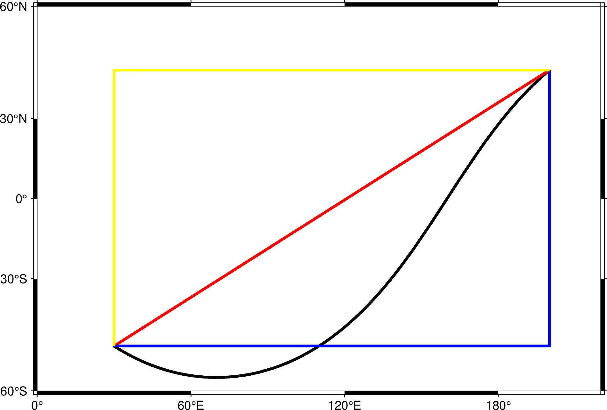
plot -A选项示意图
注：由于这里投影比较特别，所以沿着经线的线和沿着纬线的线，看上去都是直线， 在其他投影方式下可能不会是这样。
- -Ccpt
指定CPT文件或颜色列表
该选项后跟一个CPT文件名，使符号和多边形的填充颜色、线段和多边形的线条颜色由 Z 值决定。
若绘制符号（即使用 -S 选项），则符号的填充色由数据的第三列Z值决定， 其他数据列依次后移一列。
若绘制线段或多边形（即未使用 -S 选项），则需要在多段数据的数据段头记录中指定 -Zval (参见 数据段头记录中的额外属性 )，CPT文件中 val 所对应的颜色， 即为线段或多边形的线条颜色。如果要设置为多边形的填充色，注意应该要额外使用 -L 选项构建闭合多边形。
除此以外，也可以使用
-C<color1>,<color2>,...语法在 命令行上临时构建一个颜色列表，其中<color1>对应Z值为0的颜色，<color2>对应Z值为1的颜色，依次类推。下面的例子展示了
-C<color1>,<color2>..用法:gmt plot -JX10c/10c -R0/10/0/10 -B1 -Cblue,red -W2p -png test << EOF > -Z0 1 1 2 2 > -Z1 3 3 4 4 EOF
- -Ddx/dy
设置符号的偏移量。 该选项会将要绘制的符号或线段在给定坐标的基础上偏移 dx/dy 距离。 若未指定 dy，则默认 dy = dx。
- -E[x|y|X|Y][+a][+cl|f][+n][+wcap][+ppen]
绘制误差棒。 默认会绘制X和Y两个方向的误差棒。
x|y表示只绘制X方向和/或Y方向的误差棒， 此时输入数据的格式为（具体格式由选项决定）:X Y [size] [X_error] [Y_error] [others]
例如，X方向误差为1:
echo 5 5 1 | gmt plot -R0/10/0/10 -JX10c/10c -B1 -Sc0.1c -Ex -W2p -png test
X方向误差为1，Y方向误差为0.5:
echo 5 5 1 0.5 | gmt plot -R0/10/0/10 -JX10c/10c -B1 -Sc0.1c -Exy -W2p -png test
使用 +a 表示X方向和/或Y方向为非对称误差棒，此时输入数据的格式为:
X Y [size] [X_left_error X_right_error] [Y_left_error Y_right_error] [others]
例如:
echo 5 5 1 0.4 0.5 0.25 | gmt plot -R0/10/0/10 -JX10c/10c -B1 -Sc0.1c -Exy+a -W2p -png test
使用
X和Y则绘制box-and-whisker（即stem-and-leaf）符号。以-EX为例，此时数据数据格式为:X中位数 Y 0%位数 25%位数 75%位数 100%位数
25%到75%之间的方框内可以用
-G选项填充颜色:echo 5 5 4 4.25 5.4 7 | gmt plot -R0/10/0/10 -JX10c/10c -B1 -Sc0.1c -EX -Gred -W2p -png test
若使用
-EXY，则输入数据中至少需要10列；若在X或Y后加上了
+n，则需要在额外的第5列数据指定中位数的不确定性。+wcap 控制误差棒顶端帽子的长度，默认值为7p
+ppen 控制误差棒的画笔属性，默认值为
defalut,black,solid在使用
-C选项时，可以从CPT文件中查找到符号所对应的颜色+c表明将颜色应用于符号填充色和误差棒画笔属性+cf表明仅将颜色用于填充符号+cl表面仅将颜色用于设置误差棒画笔属性，并关闭符号填充色
- -F[c|n|r][a|f|s|r|refpoint]
修改数据点的分组和连接方式。
数据的分组方式有三种：
a忽略所有数据段头记录，即将所有文件内的所有数据点作为一个单独的组， 并将第一个文件的第一个数据点作为该组的参考点f将每个文件内的所有点分在一个组，并将每一组内的第一个点作为该组的参考点s每段数据内的点作为一组，并将每段数据的第一个点作为该组的参考点r每段数据内的点作为一组，并将每段数据的第一个点作为该组的参考点， 每次连线后将前一个点作为新的参考点，该选项仅与-Fr连用（似乎与-Fcs等效？）refpoint 指定某个点为所有组共同的参考点
在确定分组后，还可以额外定义组内各点的连接方式：
c将组内的点连接成连续的线段r将组内的所有点与组内的参考点连线n将每个组内的所有点互相连线
在不使用
-F选项的情况下，默认值为-Fcs。该选项的具体示例在后面给出。- -Gfill
设置符号或多边形的填充色。多段数据中数据段头记录中的
-G选项会覆盖命令行中的设置。- -Iintens
模拟光照效果
<intens>的取值范围为-1到1，用于对填充色做微调以模拟光照效果。正值 表示亮色，负值表示暗色，零表示原色。- -L[+b|d|D][+xl|r|x0][+yb|t|y0][+ppen]
将第一个和最后一个数据点连接起来。
plot 在绘制线条时，默认只将输入文本中相邻的数据点用线条连接起来。 使用 -L 选项后，plot 会额外地再将第一个和最后一个数据点连接起来，形成封闭的图形。 如果第一个和最后一个数据点的连线和其它连线交叉，就会形成不止一个封闭图形。 -L 选项常常和 -G 选项同时使用以进行颜色填充。下面看不同搭配的画图效果:
#!/usr/bin/env bash cat << EOF > t.txt 1 1 2 3 3 2 4 4 EOF cmd='t.txt -R0/5/0/5 -JX4c -W1p -Ba1f1' gmt begin plot_-L_1 gmt plot $cmd -BWStr+t'No -G or -L' gmt plot $cmd -BWStr+t'-G Only' -Gorange -X5c # -L选项中的+p子选项对画笔的外观设置一律无效 # 没有-G选项时，使用-L选项必须使用+p子选项，但相关设置无效 gmt plot $cmd -BWStr+t'-L Only' -L+p10p,blue -X5c gmt plot $cmd -BWStr+t'both -G and -L' -Gorange -L+p10p,blue -X5c gmt end show rm t.txt
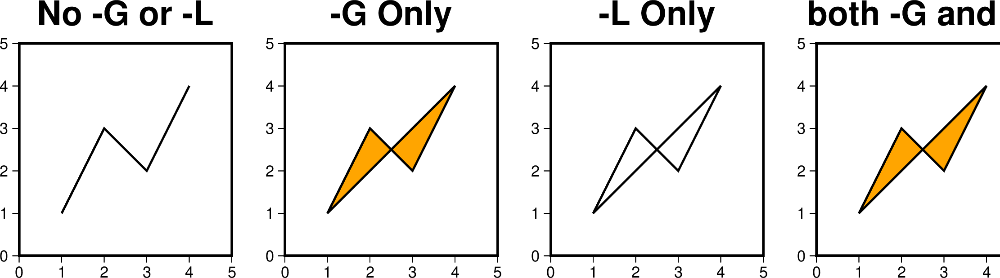
-L 和 -G 选项不同搭配方式的效果
-L 选项还可以绘制两类包络：一类是围绕线条的包络，另一类是到指定位置的包络。 首先来看围绕线条的包络：
+d围绕线条绘制对称的包络，包络相对于线条的y轴幅度由数据文件内的第三列给出+D围绕线条绘制不对称的包络，包络相对于线条的y轴幅度由数据文件内的第三、四列给出+b围绕线条绘制不对称的包络，包络的y轴范围由数据文件内的第三、四列给出
下面的例子分别绘制了上述三种情形。第一幅图使用
+d选项，数据的第三列分别是2、2、3和1， 所以包络的上下范围在线条的每一个数据点处距离线条的距离就是2、2、3和1。 第二幅图使用+D选项，数据的第三列分别是2、2、3和1， 所以包络的下范围在线条的每一个数据点处距离线条的距离就是2、2、3和1， 也就是和第一幅图完全相同。但是，上范围的距离使用的是数据文件的第四列，也就是4、3、2和1。 第三幅图使用+b选项，包络的范围与线条的位置无关。第三、四列数据分别决定了包络的上下范围。 当第三、四列数据交叉的时候，包络图形随之出现打结的现象。#!/usr/bin/env bash cat << EOF > t.txt 1 1 2 4 2 3 2 3 3 2 3 2 4 4 1 1 EOF cmd='t.txt -R0/5/-2/8 -JX5c -W2p -Ba1f1 -Glightred' gmt begin plot_-L_2 gmt plot $cmd -BWStr+t"-L\053d" -L+d gmt plot $cmd -BWStr+t"-L\053D" -L+D -X6c gmt plot $cmd -BWStr+t"-L\053b" -L+b -X6c gmt end show rm t.txt
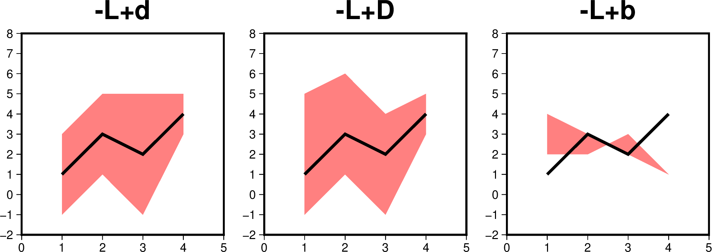
围绕线条的包络
再来看指定位置的包络：
+xl|r|x0 包络范围是从线条到线条的点的x轴最小、大值和固定值
+yb|t|y0 包络范围是从线条到线条的点的y轴最小、大值和固定值
例子如下：
#!/usr/bin/env bash cat << EOF > t.txt 1 1 2 3 3 2 4 4 EOF cmd='t.txt -R0/5/0/5 -JX5c -W2p -Ba1f1 -Glightred' gmt begin plot_-L_3 gmt plot $cmd -BWStr+t"-L\053xl" -L+xl gmt plot $cmd -BWStr+t"-L\053xr" -L+xr -X6c gmt plot $cmd -BWStr+t"-L\053x4.5" -L+x4.5 -X6c gmt plot $cmd -BWStr+t"-L\053yt" -L+yt -X-12c -Y6.5c gmt plot $cmd -BWStr+t"-L\053yb" -L+yb -X6c gmt plot $cmd -BWStr+t"-L\053y4" -L+y4 -X6c gmt end show rm t.txt
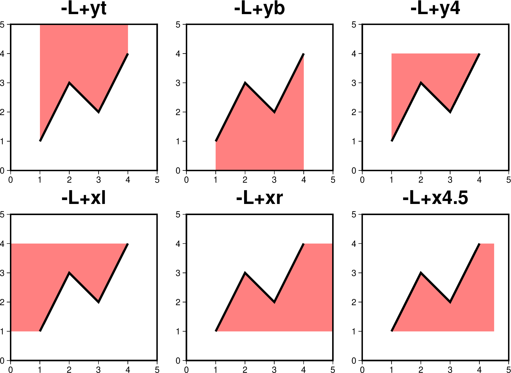
到指定位置的包络
- -N[c|r]
区域范围外的符号不会被裁剪，而会被正常绘制。
默认情况下，位于
-R范围外的符号不会被绘制的。使用该选项使得即便符号的 坐标位于-R指定的范围外，也会被绘制。需要注意的是，该选项对线段或多边 形无效，线段和多边形总会被区域的范围裁剪。对于存在周期性的地图而言，若符号出现在重复边界上，则会被重复绘制两次。比如:
gmt plot -R0/360/-60/60 -JM10c -Bx60 -By15 -Sc2c -png test << EOF 360 0 EOF
会在地图的左右边界处分别两个半圆，该行为可以通过
-N选项修改：-N关闭裁剪，符号仅绘制一次-Nr关闭裁剪，但符号依然绘制两次-Nc不关闭裁剪，但符号仅绘制一次
- -W[pen][+cl|+cf|+c]
设置线段或符号轮廓的画笔属性。
{kind=link}
{kind=link}
{kind=link}
{kind=link}
-S 选项
使用 -S 选项，则表示要绘制符号。 -S 选项的基本语法是:
-S[symbol][size]
其中 symbol 指定了符号类型， size 为符号的大小，后面可添加单位。
不同的符号类型，需要的输入数据格式也不同，但可以统一写成（用 ... 代表某符号
特有的输入列）:
X Y ...
基本符号
-S-|+|a|c|d|g|h|i|n|s|t|x|y|p
14种简单的基本符号只需要一个参数 size
{kind=link}
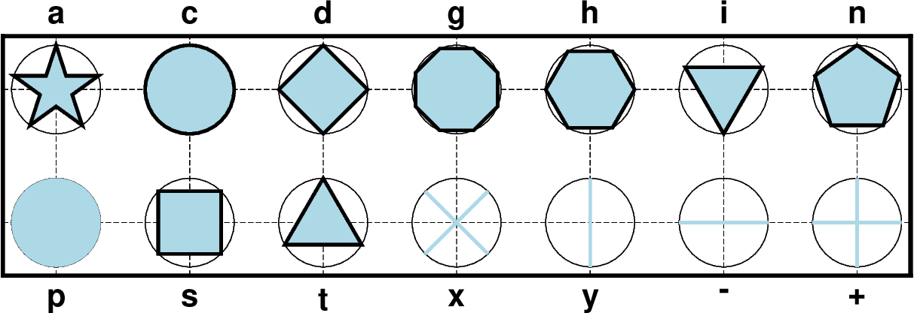
14种简单的基本符号，细圆圈表示相同 size 的外接圆。
-S-size ：短横线
-S+size ：加号
-Sasize ：五角星
-Scsize ：圆
-Sdsize ：菱形
-Sgsize ：八边形
-Shsize ：六边形
-Sisize ：倒三角
-Snsize ：五边形
-Spsize ：点
-Sssize ：正方形
-Stsize ：三角形
-Sxsize ：叉号
-Sysize ：短竖线
对于大写符号 ACDGHINST， size 表示符号的面积与直径为 size 的圆的面积相同。
4种符号 -|+|x|y 是线符号，
可以使用 -W 选项控制线宽， -G 或 -C 选项控制颜色（本例中为 -Glightblue -W1p ）。
而其他符号 -W 选项控制轮廓线属性， -G 或 -C 选项控制填充色。
复杂符号
5种复杂符号需要两个或更多的参数，还可以添加附加选项实现更多显示效果
{kind=link}
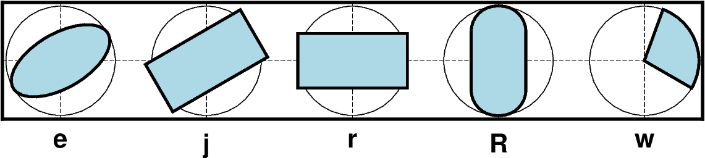
5种多参数符号。大写形式 E, J, W 与小写形式 e, j, w 的区别在于大写形式使用地理方位角与地理距离。
- -Se[direction/]major_axis[/minor_axis]
绘制椭圆。三个参数分别为方向、长轴长度、短轴长度。其中方向是相对于水平方向逆时针旋转的角度，两个轴的长度都使用长度单位，即
c|i|p这三个参数也可以在选项中省略，在输入数据中为每个椭圆单独指定。此时输入数据的格式为:
X Y 方向 长轴长度 短轴长度
这个选项绘制的椭圆形状大小不会受到底图地理投影方式的影响。
- -SE[azimuth/]major_axis[/minor_axis]
绘制椭圆。与前者类似，区别在于：
使用方位角（相对于正北方向顺时针旋转的度数）。该方位角会根据所选取的地图投影变换成角度
对于线性投影，长短轴的长度单位为数据单位，即与 -R 中数据范围的单位相同
对于地理投影，长短轴的长度单位必须设置为地理距离单位（例如千米 k 、弧度 d ）
如果想使用地理单位绘制一个圆形，可以简单使用 -SE- 。此时输入数据只需要一个参数即该圆的直径。
- -Sj[direction/]width[/height]
绘制旋转矩形。三个参数分别为方向、宽度、高度。其中方向是相对于水平方向逆时针旋转的角度。 这三个参数也可以在选项中省略，在输入数据中为每个矩形单独指定。此时输入数据的格式为:
X Y 方向 宽度 高度
- -SJ[azimuth/]width[/height]
绘制旋转矩形。与前者类似，区别在于：
使用方位角（相对于正北方向顺时针旋转的度数）。该方位角会根据所选取的地图投影变换成角度
对于线性投影，长短轴的长度单位为数据单位，即与 -R 中数据范围的单位相同
对于地理投影，长短轴的长度单位必须设置为地理距离单位（例如千米 k 、弧度 d ）
如果想使用地理单位绘制一个正方形，可以简单使用 -SJ- 。此时输入数据只需要一个参数即边长。
- -Srwidth/height
绘制矩形。与 -Sj 类似，区别在于只需要两个参数，不进行旋转。
如果使用 -Sr+s ，则输入数据分别为矩形的两个对角顶点的X和Y坐标。例如:
echo 139.2 34.8 140.5 36 | gmt plot -Sr+s -W1p,blue
- -SRwidth/height/radius
绘制圆角矩形。 radius 为圆角半径。
- -Sw[outer[/startdir/stopdir]][+a[dr]][+i[inner]][+ppen][+r[da]]
绘制楔形图。需要的3个参数分别为外直径 outer ，起始角度 startdir 和结束角度 stopdir （相对于水平方向逆时针旋转的角度）。 附加 +i 可以进一步指定内直径 inner （默认为0）。附加 +a[dr] 表示只绘制弧线。如果附加了 dr ，则以 dr 为径向间隔绘制弧线。 附加 +r[da] 表示只绘制径向线。如果附加了 da ，则以 da 为弧向间隔绘制径向线。
- -SW[outer[/startaz/stopaz]][+a[dr]][+i[inner]][+ppen][+r[da]]
绘制楔形图。与前者类似，区别在于使用起始方位角 startaz 和结束方位角 stopaz （相对于正北方向顺时针旋转的度数）， 以及内直径和外直径都使用地理距离（默认为km）。
条状符号
#!/usr/bin/env bash
#
# Plot plot bar symbol for the man page
gmt begin GMT_base_symbols4
cat << EOF > ttv.d
1 1 0
2 3 1
EOF
cat << EOF > tth.d
1 1 0
3 2 0.7
EOF
cat << EOF > ttm.d
0.2 1 1.8 0.4 1.1
0.3 2 0.8 0.2 0.8
EOF
gmt makecpt -Cjet -T0/4/1
gmt plot -R0/3.5/0/3.75 -JX2i/1i -Bag1 -BWS -Sb0.2i+b -Glightblue -W0.5p -X0.5i -Y1i ttv.d --MAP_FRAME_TYPE=graph --MAP_VECTOR_SHAPE=0.5
gmt plot -Bag1 -BWS -SB0.2i+b -Glightred -W0.5p -X2.5i tth.d --MAP_FRAME_TYPE=graph --MAP_VECTOR_SHAPE=0.5
gmt plot -Bag1 -BWS -SB0.2i+i4 -C -W0.5p -X2.5i ttm.d --MAP_FRAME_TYPE=graph --MAP_VECTOR_SHAPE=0.5
gmt plot -Bag1 -BWS -SB0.2i+i4+s25 -C -W0.25p -X2.5i ttm.d --MAP_FRAME_TYPE=graph --MAP_VECTOR_SHAPE=0.5
gmt end show
{kind=link}
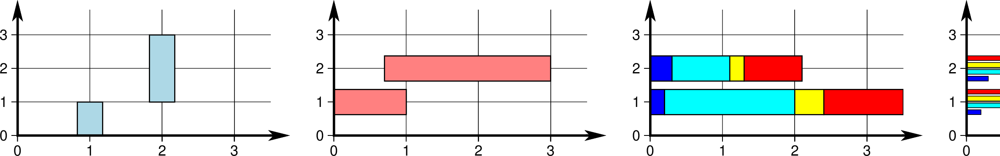
- -Sb[size[c|i|p|q]][+b|B[base]][+v|iny][+s[gap]]
绘制垂直条状符号，从 base 到坐标Y。 size 为宽度，可以使用 c|i|p 这样的长度单位，也可以使用 q 表示X方向单位。 默认情况下 base = 0，附加 +b[base] 可以修改。如果只附加 +b 但没有设置 base ，则需要额外的最后一列数据来指定 base 的值。 使用 +B[base] ，条状符号的高度将从 base 起算（默认从原点起算）。
普通条状符号只需要一列Y值输入数据。如果想绘制多波段条状符号，需要附加 +v|iny ，其中 ny 表示波段数量。输入数据中也需要有 ny 列Y值。 这里 +i 表示以 dy 为步长累加条状的值， +v 表示按递增顺序获得相对于 base 的完整值。
默认情况下多个波段都绘制在一个条状符号上，附加 +s 让多波段绘制为相邻的多个条状符号。 可选参数 gap 表示在相邻条状符号之间添加间隔，间隔宽度为 size 的百分比 gap 。此时 size 定义为多个条状符号加间隔的总宽度。
绘制多波段条状符号需要使用CPT文件以及 -C 选项指定颜色，其中CPT文件的取值范围必须是 0, 1, …, nx - 1。 输入数据的格式为(x1 y x2 … xn)或(dx1 y dx2 … dxn)。
- -SB[size[c|i|p|q]][+b|B[base]][+v|inx][+s[gap]]
与前者类似，区别在于绘制的是水平条状符号。
矢量符号
矢量符号需要长度和方向，或矢量终点坐标等参数。通过附加选项可以定制矢量头的样式。
- -Smsize[+vecmodifiers]
绘制数学圆弧，输入数据的格式为:
X Y radius start stop
其中 radius 为圆弧半径， start 和 stop 定义为水平方向起始的逆时针角度。 默认圆弧两端无矢量头，可以通过附加选项 +vecmodifiers 添加，见 矢量/箭头 一节。 size 定义为矢量头的长度。 圆弧的线宽由 -W 选项设定，矢量头的轮廓线宽默认为圆弧线宽的一半。
- -SMsize[+vecmodifiers]
与前者类似，唯一的区别为当圆弧的夹角恰好是90度时会用直角符号来表示。
#!/usr/bin/env bash
gmt begin plot_-Sm
gmt basemap -R0/4/0.5/1.5 -JX6c/3c -Bxa1g1 -Bya0.5g0.5 -BWSen
gmt plot -Sc0.15c -Gblack << EOF
1 1
3 1
EOF
gmt plot -Sm0.2c+b+e+g -Gblack -W0.5p,red << EOF
1 1 1 10 60
EOF
gmt plot -SM0.2c+b+l -Gblack -W0.5p,blue << EOF
3 1 1 10 100
EOF
gmt end show
{kind=link}
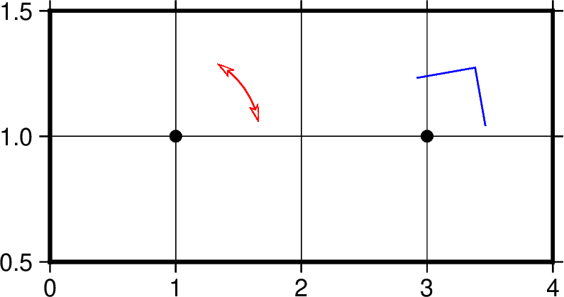
plot -Sm|M 示意图
- -Svsize[+vecmodifiers]
绘制矢量，输入数据格式为:
X Y direction length
其中 direction 定义为水平方向起始的逆时针角度， length 为矢量长度， size 为矢量头的长度。 矢量杆的宽度颜色等属性由 -W 控制，矢量头的轮廓线宽默认为其一半。 更多矢量头的属性可以通过 +vecmodifiers 添加，见 矢量/箭头 一节。
- -SVsize[+vecmodifiers]
与前者类似，唯一的区别为第三列是方位角而不是方向，即以正北为起点顺时针旋转的角度。
- -S=size[+vecmodifiers]
绘制地理矢量，区别在于第三列是方位角（即以正北为起点顺时针旋转的角度），第四列长度的单位是地理单位（默认为km）。
#!/usr/bin/env bash
#
# Demonstrate a few arrows
gmt begin GMT_base_symbols5
# Cartesian straight arrows
gmt plot -R0/5/0/5 -JX1.75i -Sv0.3i+s+e+bi -W2p -Gred --MAP_VECTOR_SHAPE=0.5 << EOF
0.5 1.0 4.5 2.5
EOF
# Circular arrows
gmt plot -Sm0.3i+bt+e -W2p -Gred --MAP_VECTOR_SHAPE=0.5 -X2i << EOF
1 0.3 2c 0 90
EOF
# Geo arrows
gmt plot -R0/90/-41.17/41.17 -JM1.75i -S=0.3i+b+er -W2p -Gred --MAP_VECTOR_SHAPE=0.5 -X2i --MAP_FRAME_TYPE=plain << EOF
10 -35 80 8000
EOF
gmt end show
{kind=link}
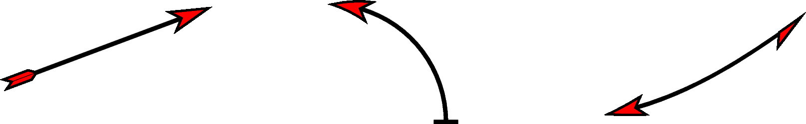
自定义符号
- -S[kname[/size]]
绘制自定义的符号。目前，GMT 官方内置了 40 个自定义符号，如下所示：

如果这些内置自定义符号无法满足需求，用户可以自行制作自定义符号文件并使用。 详细使用方法见制作和使用自定义符号。
带修饰物的线条
第一种类型的带修饰物线条，通常用于绘制气象锋面、断层线等。线条修饰物由附加选项控制，线条属性由 -W 选项控制。
#!/usr/bin/env bash
#
# Plot front symbols for use on man page
gmt begin GMT_base_symbols7
cat << EOF > t.txt
0 0
10 20
EOF
# Centered symbols using fixed interval, then same with just 1 centered symbol
gmt plot -R-2/12/-10/30 -JX1i -W1p -Glightblue -Sf0.4i/0.07i+b t.txt
gmt plot -W1p -Glightred -Sf0.4i/0.1i+c+r -X0.6i t.txt
gmt plot -W1p -Gred -Sf0.4i/0.1i+f -X0.6i t.txt
gmt plot -W1p -Sf0.4i/0.2i+S+r -X0.6i t.txt
gmt plot -W1p -Gblack -Sf0.2i/0.05i+t+l -X0.6i t.txt
gmt plot -W1p -Gred -Sf-1/0.1i+b -X0.6i t.txt
gmt plot -W1p -Gred -Sf-1/0.1i+c -X0.6i t.txt
gmt plot -W1p -Gred -Sf-1/0.1i+f -X0.6i t.txt
gmt plot -W1p -Sf-1/0.4i+S+l -X0.6i t.txt
gmt plot -W1p -Glightorange -Sf-1/0.1i+t -X0.6i t.txt
gmt plot -W1p -Glightgreen -Sf-1/0.1i+v -X0.6i t.txt
gmt end show
{kind=link}
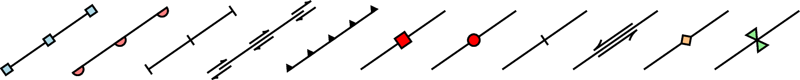
-Sf[±]gap[/size][+l|+r][+b|c|f|s[angle]|t|v][+ooffset][+p[pen]]
gap 线段上符号之间的距离，若为负值，则解释为线段上符号的个数。
size 为符号大小
若省略了 size ，则默认为 gap 的30%
若 gap 为负值，则 size 不可省略
+l 和 +r 分别表示将符号画在线段的左侧还是右侧，默认是绘制在线段中间
+b 符号为box
+c 符号为circle
+t 符号为triangle
+f 符号表示断层（fault），默认值。
+s 符号表示断层的滑动（slip），用于表示左旋或右旋断层。 可选的参数 angle 控制绘制矢量时的角度（默认为20）。 用 +S 绘制一个弧形箭头。
+ooffset 将线段上的第一个符号相对于线段的起点偏离 offset 距离，默认值为0
默认符号的线属性与线段相同（ -W 选项），可以使用 +ppen 为符号单独指定线属性。 使用 +p 则不绘制符号的轮廓。
+i 将隐藏线段只绘制符号。
第二种类型的带修饰物线条是带标注文字的线段，常用于绘制断层名的断层线。
#!/usr/bin/env bash
#
# Plot plot quoted line symbols for use on man page
gmt begin GMT_base_symbols8
gmt math -T0/360/1 T 5 MUL COSD 8 MUL = t.txt
# Just a cosine with line-following constant text a few times
gmt plot -R0/360/-10/10 -JM6i -W2.5p,6_4:0 -Sqn4:+l"wiggly line"+v+f12p,Times-Roman,red t.txt --PS_LINE_CAP=round
gmt end show
{kind=link}
- -Sqd|D|f|l|L|n|N|s|S|x|Xposinfo[:labelinfo]
有6种可选的方式控制标注文字：
ddist[c|i|p][/frac]
- Ddist[d|e|f|k|m|M|n|s][/frac]
小写 d 指定标注之间的距离 dist ，单位为 c (cm), i (inch), p (points)。 默认值为 10c 。
大写 D 指定标注之间的地理距离 dist ，单位为 e (m), f (foot), k (km), M (mile), n (nautical mile), u (US survey foot), d (arc degree 弧度), m (arc minute 弧分), s (arc second 弧秒)。
可选选项 frac 表示将第一个标注放在距离线段起点
frac * dist处，默认值为0.25。- ffile.txt[/slop[c|i|p]]
读取 ASCII 文本文件 file.txt，将标注放置在文件中指定的坐标位置。 坐标位置和线段间的距离小于 slop 才会绘制标志文字。默认值为0即只绘制位于线段上的坐标。
- l|Lline1[,line2,…]
每个 line 的格式为 start_lon/start_lat/stop_lon/stop_lat ，标注文字会绘制在这些 line 与线段的交点。 小写的 l 表示直线，而大写的 L 表示使用大圆路径。
- n|Nn_label[/min_dist[c|i|p]]
指定线段上等间隔标注的个数，默认为1即只绘制一个标注。 小写的 n 表示标注位置在每段间隔的中心，而大写的 N 表示标注位置在每段间隔的起点。
可选选项 /min_dist[c|i|p] 指定相邻标注的最小距离。 该选项同时限制了只能在长度大于 min_dist 的线段上进行标注。
- s|Sn_label[/min_dist[c|i|p]]
与 n|Nn_label 相同，但输入数据会被解释为一系列的两点线段。
- x|Xxfile.txt
读取 ASCII 文本格式的多段数据文件 xfile.txt ，标签文字会绘制在这些多段数据与线段的交点。 大写的 X 会先将输入数据重采样为大圆弧线。
添加可选选项 +rradius[c|i|p] 可以设置 x-y 平面上标注文字之间的最小间距。
可选选项 labelinfo 用于控制文字的格式，其可以是下面子选项的任意组合：
- +aangle
设置文字相对于线段的角度。可以设置为 +an 表示文字垂直与线段。默认为 +ap 表示文字与线段平行。
- +cdx[/dy]
设置文字与文本框之间的边距。可以添加单位 c|i|p 或百分号 % 表示边距相对字体大小的百分比，默认为15%。
- +ffont
设置字体属性，默认为9p。
- +g[color]
绘制一个不透明的文本框背景。
- +i
不绘制线段，只绘制标注文字。
- +llabel
手动设置固定的标注文字。
- +Lh
从数据头段中读取标注文字。
- +Ld
采用笛卡尔坐标系内的距离作为标注内容，在后面附加 c|i|p 之一指定单位。
- +LD
采用实际的地理距离作为标注内容，在后面附加 d|e|f|k|n|M|n|s 之一指定单位，默认为弧度 d 。
- +Lf
从 ffile.txt 的第二列之后读取所有文字作为标注内容（不包括第二列）。
- +Lx
从 x|Xxfile.txt 文件头段中读取标注文字。
- +ndx[/dy]
偏移标注文字的位置，可以使用单位 c|i|p 。不能与 +v 一起使用。
- +o
使用圆角矩形文本框。不能与 +v 一起使用。
- +p[pen]
设置文本框轮廓线型。
- +rmin_rad
当线段的曲率半径小于 min_rad 不绘制文字。
- +t[file]
将每个标注文字的 x, y, angle, text 保存进文件 file [Line_labels.txt]。
- +uunit
在所有标注后面附加 unit 作为单位。 unit 可以是一个用双引号括起来的任意字符串。
- +v
标注文字沿着线段弯曲。
- +=prefix
在所有标注前面添加前缀 prefix 。
输入数据格式
-S 选项相对复杂，与不同的选项连用，或者后面接不同的参数，所需要的输入数据的
格式也不同。不管是什么符号，至少都需要给定符号的位置，即X和Y是必须的:
X Y
不同的符号，可能还需要额外的信息，统一写成（用 ... 代表某符号特有的输入列）:
X Y ...
若 -S 指定了符号类型但未指定大小，即 -S<symbol> ，若该符号类型需要指定
大小，则需要将符号大小放在输入数据的第三列，其他输入数据的列号延后，
此时数据格式为:
X Y size ...
若size<=0，则跳过该记录行。
若 -S 选项后未指定符号代码，则符号代码必须位于输入文件的最后一列
X Y ... symbol
若使用了 -C 和 -S 选项，则符号的填充色由数据的第三列决定，其他字段依次后移:
X Y [Z] ... symbol
因而总结一下输入数据的格式为:
x y [Z] [size] ... [symbol]
其中 ... 为某些符号所要求的特殊的数据列， symbol 是未指定符号时必须的
输入列， size 是未指定大小时的输入列。
制作和使用自定义符号
如果 GMT 内置的自定义符号无法满足用户的需求，用户可以根据 GMT 自定义符号文件 的格式要求自行制作自定义符号文件。
使用自定义符号时，GMT 会依次按照如下顺序去搜索自定义符号的定义文件 name.def：
当前目录，即运行脚本所在目录
~/.gmt/custom目录（Linux 和 macOS 用户）或C:\Users\你的当前用户名\.gmt\custom目录（Windows用户）$GMT_SHAREDIR/custom目录
用户可以将自己制作的自定义符号复制到以上任一路径即可正常使用。
建议放在 ~/.gmt/custom 目录（Linux 和 macOS 用户）或
C:\Users\你的当前用户名\.gmt\custom 目录（Windows 用户）下。
多段数据
对于多段数据而言，每段数据的头段记录中都可以包含一些选项，以使得不同段数据拥有 不同的属性。头段记录中的选项会覆盖命令中选项的参数：
-Gfill：设置当前段数据的填充色-G-：对当前数据段关闭填充-G：恢复到默认填充色-W<pen>：设置当前段数据的画笔属性-W：恢复到默认画笔属性 MAP_DEFAULT_PEN-W-：不绘制轮廓-Z<zval>：从cpt文件中查找Z值<zval>所对应的颜色作为填充色-ZNaN：从cpt文件中获取NaN颜色
详情及示例参见 数据段头记录中的额外属性
示例
最简单的命令，绘制线段或多边形，此时数据输入需要两列，即X和Y:
gmt plot -R0/10/0/10 -JX10c -B1 -png test << EOF
3 5
5 8
7 4
EOF
下面的脚本展示了 -F 选项的用法：
#!/usr/bin/env bash
# 此处定义了函数plotpts，用于绘制图中绿色和蓝色的圆圈，并加上文字
function plotpts
{
# Plots the two data tables and places given text
gmt plot -Sc0.2c -Ggreen -Wfaint t1.txt
gmt plot -Sc0.2c -Gblue -Wfaint t2.txt
echo $* | gmt text -F+cTL+jTL+f12p -Dj0.05i
}
# 生成测试用的第一个数据文件
cat << EOF > t1.txt
10 10
48 15
28 20
>
40 40
30 5
5 15
EOF
# 生成测试用的第二个数据文件
cat << EOF > t2.txt
7 20
29 11
8 4
EOF
# -Fcs: 默认的连接方式
gmt begin plot_-F
gmt basemap -R0/50/0/45 -Jx0.06i -Ba10 -BWSne
gmt plot -W1p t[12].txt
plotpts TWO DATA TABLES
# -Fra
gmt plot -W1p t[12].txt -Fra -X3.25i
plotpts DATASET ORIGIN
# -Frf
gmt plot -W1p t[12].txt -Frf -X-3.25i -Y3.15i
plotpts TABLE ORIGIN
# -Frs
gmt plot -W1p t[12].txt -Frs -X3.25i
plotpts SEGMENT ORIGIN
# -Fr10/35
gmt plot -W1p t[12].txt -Fr10/35 -X-3.25i -Y3.15i
plotpts FIXED ORIGIN
echo 10 35 | gmt plot -Sa0.4c -Gred -Wfaint
# -Fna
gmt plot -W1p t[12].txt -Fna -X3.25i
plotpts NETWORK
gmt end show
rm t[12].txt
{kind=link}
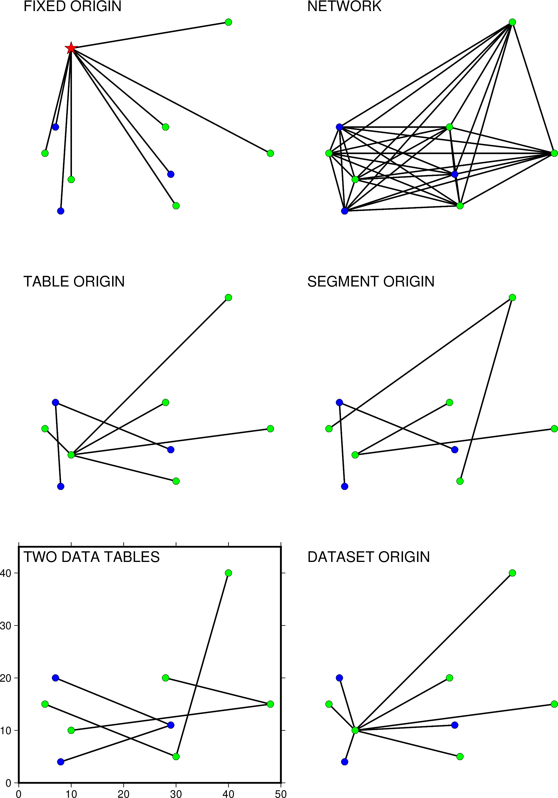
plot -F选项示意图